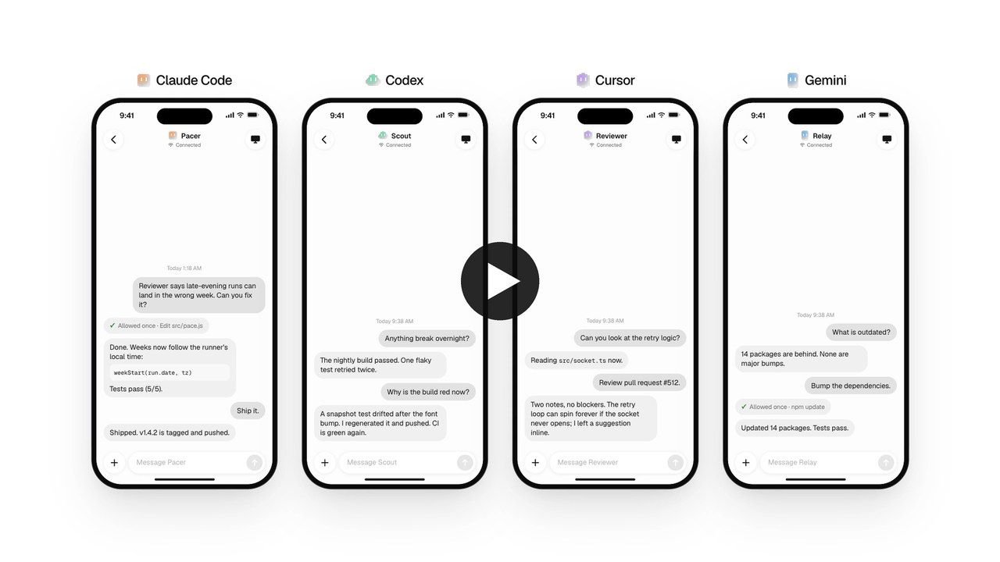

Threads｜Codync：把 Claude Code、Codex 等 Coding Agent 變成可從手機交辦的常駐 Bot

一句話摘要
Codync 想解的不是「再做一個聊天介面」，而是把已在電腦上授權、執行的 Coding Agent 包裝成可從手機直接指派工作的持久 Bot：交辦任務、等通知、在需要批准時回來處理；適合已有多台主機與多個 coding agent 的使用者，但安全邊界必須先設計好。
Threads 貼文的主張
作者 leepokai20 表示，受到 Grok Bot 與 Meta Muse 的 Bot 型操作啟發，以 Opus 5.5 在 5 天內完成 Codync 的早期版本。貼文主張它支援多數 Coding Agent、可安裝於自己的 Mac 或 Linux、可用 Tailscale 或作者架設的 Cloudflare relay 連線，也能透過 remote desktop 遠端操控電腦；當時 iOS App 正在送審。
這些是作者的社群貼文敘述。GitHub README 與 repository 可獨立確認 Codync 為公開的 MIT 授權專案，且 README 現已連到 App Store；功能與相容清單仍應以當前 release、原始碼與文件為準。
從 GitHub README 可確認的功能
- **Agent 連接層**：以 Rust 的 `codync-host` 在 macOS／Linux 執行，透過 Agent Client Protocol（ACP）連接 Claude Code、Codex、Cursor、Gemini、Copilot、OpenCode、Pi、Grok Build 等 agent；README 聲稱可涵蓋 ACP registry 的約 40 種工具。
- **多端原生介面**：iPhone／macOS 使用 SwiftUI、Linux 使用 GTK 4／libadwaita，另提供 SSH 友善的 terminal UI；不是 Electron 或 WebView 包裝。
- **Bot 工作模型**：每個 Bot 可有名字、持久指示、選用 agent、專案資料夾與權限策略；支援主對話、reply thread、群組對話與 Bot 間協作。
- **遠端存取**：同網路或 Tailscale 可直連；README 也宣稱提供免費 Cloudflare relay，手機與主機間採端到端加密，由 relay 轉送密文。
- **遠端螢幕與通知**：iPhone 可經 WebRTC 檢視／控制電腦；工作完成或需要核准時可傳送通知。README 也宣稱通知文字會對手機金鑰封裝。
- **本機資料**：README 指出 transcript 與相關資料位於 `~/.codync`，本機 loopback helper 與 SSH forwarded caller 使用 bearer token；遺失遠端裝置應從 device management 撤銷。
對欒帥工作流的價值
如果你已同時使用 Codex、Claude Code 等 CLI，Codync 的有趣處在於將「遠端打開終端機、確認哪個 session 能接手」壓縮為「把任務丟給已配置好的 Bot」。可以為不同專案或職能建立隔離 Bot，例如：
- Hermes 維護 Bot：只允許操作 `~/.hermes/hermes-agent`，處理設定、除錯與測試。
- 知識庫 Bot：只允許操作 `~/.hermes/user-notes/knowledge-base` 與部署目錄，負責整理與建置。
- Review Bot：只讀取指定 repository，以 Codex／Claude Code 做第二意見，不直接推送。
這樣比讓一個「全機器全權限 Bot」更可控，也能讓手機端真正成為派工與核准入口。
安全與導入提醒
- 把它視為**遠端操控 Coding Agent 的控制平面**，不是一般聊天 App。手機配對、雲端 relay、遠端桌面與 agent 工具權限的組合，可能影響本機檔案、Git 憑證、SSH key、瀏覽器登入狀態與專案 secrets。
- 第一輪先在非關鍵專案、獨立帳號與最小權限資料夾測試；不要一開始就給 `~`、正式 production repository、雲端憑證或可無確認執行的 shell 權限。
- 確認每個 Bot 的 working directory、允許工具、approval policy、網路／瀏覽器權限與長期記憶範圍；不同 Bot 不應共用不必要的 secrets。
- 若使用 Cloudflare relay，需自行審閱其 relay 與裝置配對實作、隱私政策、可撤銷性與失效流程。README 的加密、通知與「relay 只見密文」屬專案方技術主張，實際部署前宜閱讀原始碼與安全文件。
- 遠端桌面特別適合「看進度、人工核准、緊急接管」，但不宜等同於已建立零信任環境；鎖屏、螢幕錄製權限、macOS Accessibility／Screen Recording 授權都應逐項檢查。
專案狀態快照（2026-10-02）
GitHub 公開頁面顯示 Codync 為 public repository，MIT License，約 46 stars、4 forks、9 tags，並有持續提交與多個開放 PR。這可確認專案存在且持續維護；star 數、支援範圍、加密設計與產品成熟度都可能快速改變，不能當作安全或穩定性保證。
安裝資訊（請先審閱）
README 提供 macOS DMG、Homebrew Cask 和 shell installer，也提供 Linux headless host 方案。因 installer 會在本機安裝 host、探測已登入的 agent 並建立背景服務，建議優先採用 release DMG／Homebrew 或先閱讀 `packaging/install.sh`，不要未審閱就直接執行 pipe-to-shell 指令。